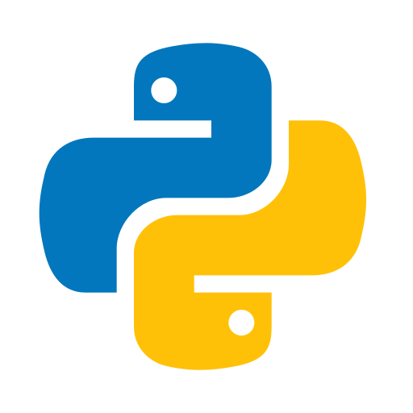
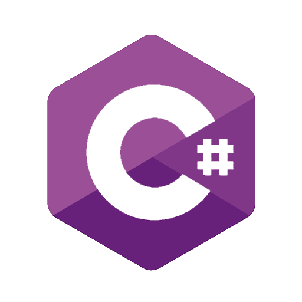
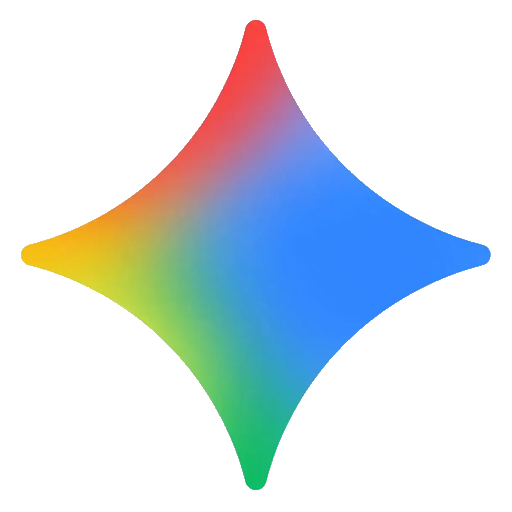
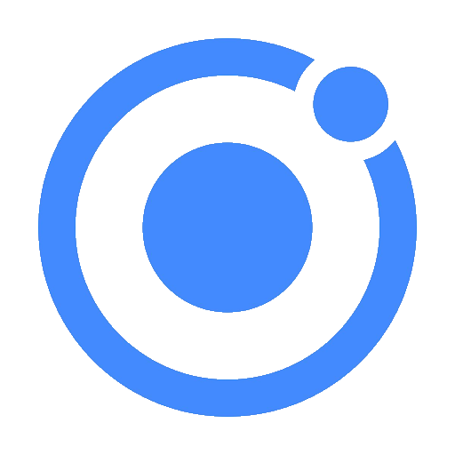
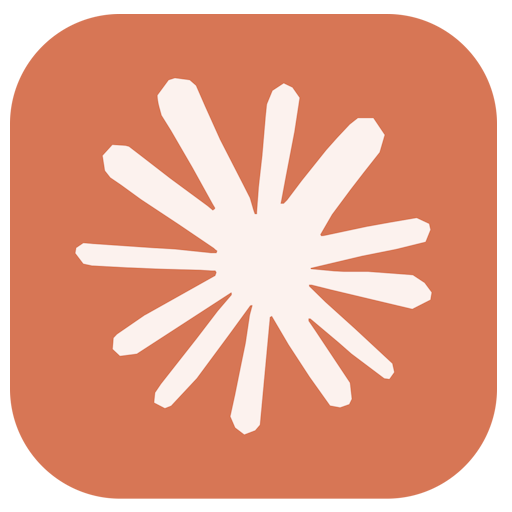
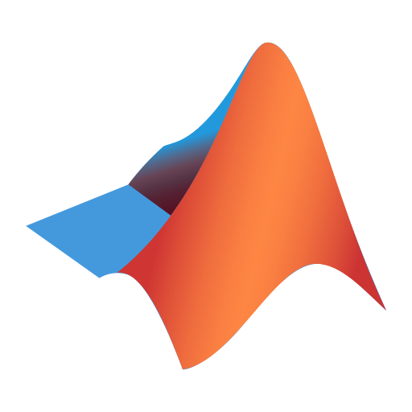
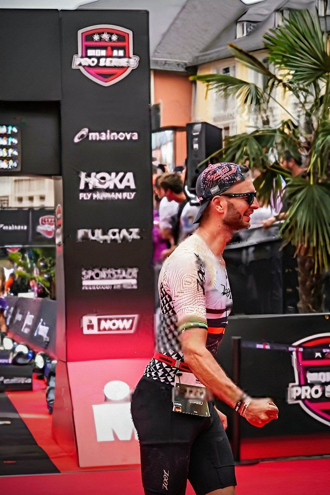
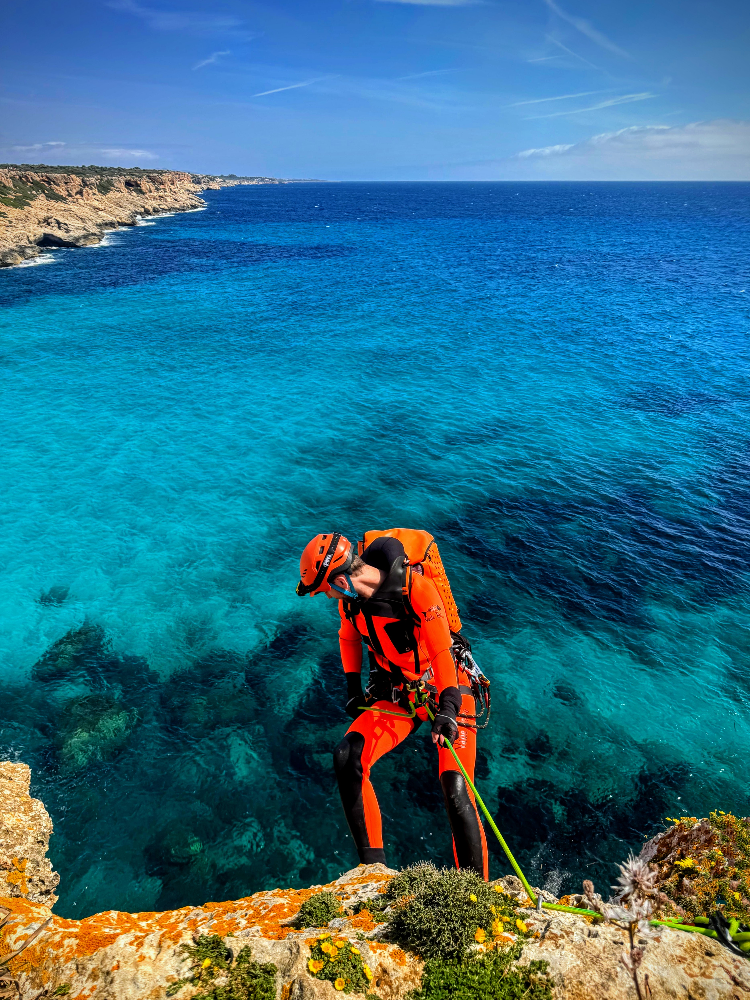
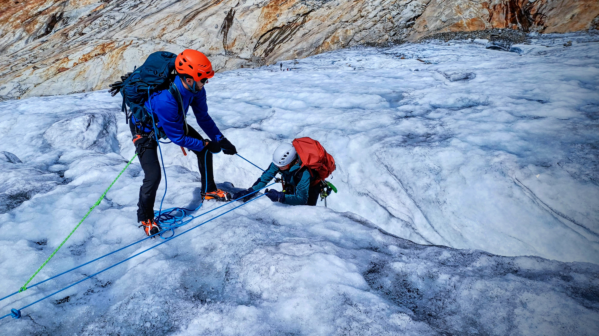

- Professionally trained and certified by the Tiroler Bergsportführerverband to lead canyoning tours.
- Guided canyoning tours across Europe, leading diverse groups with different experience levels safely through technically challenging terrain.
- Took responsibility for risk assessment, route decisions and safety management in dynamic environments with changing weather, water and terrain conditions.
- Strengthened leadership and decision-making under pressure, maintaining clear judgment and structured action in safety-critical situations.
- Applied communication skills to instruct participants clearly, build trust quickly and adapt guidance to different personalities and ability levels.
- Certified in first aid and trained to respond to emergencies in remote settings with limited external support.
- Built broad practical expertise across multiple outdoor disciplines, with a strong focus on safety, situational awareness and group management.
Curriculum Vitae
-
-
- Coordinated the development of a Python-based software platform for triathlon training planning.
- Built and led a small research-driven development function focused on mathematical modeling, training science and product integration.
- Directed the design and strategic integration of mathematical models to simulate biological dynamics and improve the predictive accuracy of training recommendations.
- Owned the full development lifecycle, from concept and research to implementation, validation and testing of the training planning software.
- Guided data science efforts using real-world training data to support model development and performance evaluation.
- Conducted applied research on advanced topics such as heart rate variability analysis and threshold detection, translating scientific concepts into practical app features.
- Contributed to app development to ensure a robust, user-friendly and scientifically grounded product.
-
- Completed formal training in rope work, knot techniques, anchor construction and canyon rescue procedures.
- Built strong practical skills in tour planning, route finding, navigation and the safe guidance of groups in canyon terrain.
- Developed a solid understanding of hydrology, water dynamics, meteorology, topography and canyon geology.
- Gained hands-on experience in risk assessment, hazard prevention and accident management in demanding outdoor environments.
- Trained whitewater swimming as well as jumping and sliding techniques relevant to canyoning and safety.
- Strengthened leadership, decision-making and situational awareness in technically demanding and safety-critical conditions.
-
- Held long-term volunteer responsibility across youth leadership, technical coordination, swim coaching and web administration.
- Served for many years on the board while also taking on substantial day-to-day operational responsibility within the organization.
- Organized activities, supported operational readiness, and helped shape safety and process standards within the local chapter.
- Coached children in swimming, teaching technique, water safety and endurance in an age-appropriate and structured way.
- Maintained the chapter website and supported clear digital communication for members and the public.
-
- Developed simulation software for photovoltaic modules in C#.
- Performed multiphysics simulations ranging from semiconductor physics and optical interference effects to electrical conductivity.
- Gained hands-on experience in the production of solar cells and modules in inline manufacturing environments.
- Worked on the sputtering of transparent conductive oxide (TCO) layers.
-
- Completed the PhD with the highest distinction, summa cum laude (1.0).
- The dissertation was awarded the Otto F. Scharr Prize for outstanding scientific achievements in the field of power engineering.
🔗 link to news article - Received a scholarship from the German Academic Scholarship Foundation.
- Dissertation: Multiphysics Simulation of Thin-Film Photovoltaic Modules.
🔗 link to thesis - Developed optical and electrical simulation software for thin-film photovoltaic modules.
- Research stay abroad at University of Hawaii in Honolulu, USA.
-
- Completed practical training in emergency medical services, the emergency department and anesthesiology.
- Built a strong foundation in prehospital emergency care, patient assessment and structured clinical decision-making.
- Gained hands-on experience in emergency situations, including patient monitoring, first response and interdisciplinary teamwork.
- Learned to work reliably and calmly under time pressure in medically critical environments.
-
- Conducted research in the microwave laboratory.
- Led exercise groups in experimental physics and mathematics.
- Held tutoring sessions.
- Supervised physics practical courses.
- Designed and graded exams in experimental physics.
- Mentored several bachelor's students.
-
- Graduated with a final overall grade of 1.0, ranking first among all graduates of the university.
- Received the Deutschlandstipendium scholarship.
- Awarded the Arthur Fischer Prize for the best master's thesis in experimental physics in 2018.
🔗 link to news article - Master's thesis in superconductivity and millikelvin physics: Microwave Investigations on SrTiO3-based Materials at mK Temperatures (grade: 1.0).
🔗 link to thesis - Academic focus on superconductivity, light-matter interaction and nanophotonics.
- Research stay abroad at Simon Fraser University in Vancouver, Canada.
-
- Graduated with a final overall grade of 1.6.
- Academic focus on computational physics and theory of relativity.
- Bachelor's thesis in solid-state physics and radio-frequency engineering: Frequency- and temperature-dependent microwave properties of superconducting samples in Corbino geometry (grade: 1.0).
🔗 link to thesis
Tech Stack

Python- React
- TypeScript
- ChatGPT
- NotebookLM

C#- LabVIEW

Google Gemini
Ionic
Claude- Android
- HTML
- Supabase
- iOS

MATLAB
Testimonials
Mario made a strong impression with his exceptional technical expertise, which enabled him to find effective solutions even for complex situations. Without exception, he found excellent solutions to every problem that arose.
Professor at KIT and Executive Board Member at ZSW Stuttgart
His respectful and collaborative approach to leadership creates a pleasant and trusting work environment. He takes responsibility at all times, works very independently, and demonstrates great initiative.
Managing Director at PB Invest (Schweiz) AG
Mario consistently performed his duties to our complete satisfaction and demonstrated a high degree of independence. His work has always earned our highest praise in every respect.
Group Leader at 5th Institute of Physics at University of Stuttgart
His work style was consistently characterized by a high degree of efficiency, reliability, systematic approach, and strong planning and organizational skills.
Group Leader at 1st Institute of Physics at University of Stuttgart
Sports
Triathlon
Triathlon has been my passion since 2015, when I completed my first sprint-distance race in Tübingen. Since then, I have raced every distance from sprint to Ironman, always driven by the unique combination of disciplines, the mental resilience, and the constant pursuit of self-improvement. I have always built my own training plans, reflecting the analytical, structured and data-driven way I approach both sport and work. As an ambitious age-group athlete, I currently focus mainly on Ironman 70.3 racing and am training toward qualification for the 2026 Ironman 70.3 World Championship.



Canyoning
Canyoning has been my second great passion since 2020, combining my love for nature, mountain sports and travel in a unique way. What fascinates me most is the mix of wild natural environments, technical challenges, teamwork and the adventure of moving through dynamic terrain. I explore canyons both privately and professionally as an authorized canyoning guide with the Tyrolean Mountain Guides Association, responsible for leading groups in situations where calm judgment, risk management and rational decision-making under pressure are essential. Experiences in places such as Ticino, the Azores and Oman have further strengthened my adaptability, leadership and ability to act with clarity in complex situations, qualities that also carry over strongly into my professional life.


Mountaineering
Mountaineering has been an important part of my life since around 2010, alongside climbing and other alpine activities. What draws me to it is the combination of calm focus, careful planning and the determination to work step by step toward a demanding goal. I am particularly fascinated by versatile tours involving rock, ice and glacier terrain and by the need to make rational decisions under physical and mental load. In the mountains, progress is rarely purely individual, as difficult terrain often requires teamwork, trust and mutual support in order to reach the summit and return safely. Experiences on several 4000-meter peaks in the Alps, including Dufourspitze and Mont Blanc, as well as mountains such as Mauna Kea, have strengthened qualities that also matter greatly in professional life: endurance instead of short-term intensity, thoughtful preparation, resilience, long-term thinking and a clear focus on what matters most.
